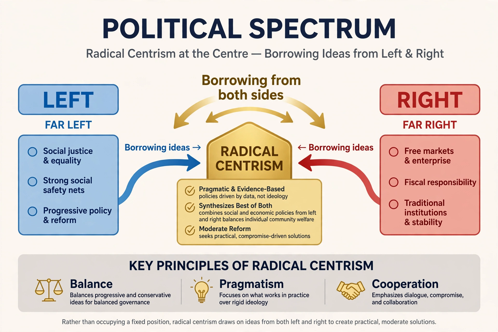

Radical centrism, also called the radical center, the radical middle, or centrist populism, is a political ideology that combines a strong commitment to the political centre with a willingness to pursue fundamental, systemic reforms. Unlike traditional centrism, which tends toward moderation, compromise, and incremental change, radical centrism argues that many contemporary problems require bold, structural solutions drawn pragmatically from across the political spectrum.
The term was popularised in the late 20th and early 21st centuries by writers and policy thinkers who argued that the conventional left–right divide had become an obstacle to solving problems such as institutional gridlock, economic stagnation, and declining trust in government. Journalist Thomas L. Friedman used the phrase "radical center" in his columns, and the 2001 book The Radical Center: The Future of American Politics by Ted Halstead and Michael Lind set out an agenda combining market mechanisms with a strengthened social safety net.
Radical centrists typically support a mixture of positions that do not fit neatly on the conventional spectrum: market-based environmental policies such as carbon taxes, universal basic services or savings accounts, electoral reforms such as ranked-choice voting and open primaries, and anti-corruption measures aimed at reducing the influence of special interests. Adherents describe their approach as pragmatic and evidence-driven rather than ideological.
Radical centrism overlaps with the Third Way associated with figures such as Bill Clinton and Tony Blair, but its proponents generally present it as more reformist and more critical of established party establishments. It is distinct from moderate politics insofar as it seeks disruptive change, and from populism in that it generally defends expertise and institutions while seeking to reform them.
Critics argue that radical centrism is a marketing label rather than a coherent ideology, that its policy mix can be internally inconsistent, and that self-described centrists underestimate genuine value conflicts in politics. Others contend that the "radical" element is rarely as transformative as advertised.
See also: Centrism · Third Way · Political spectrum